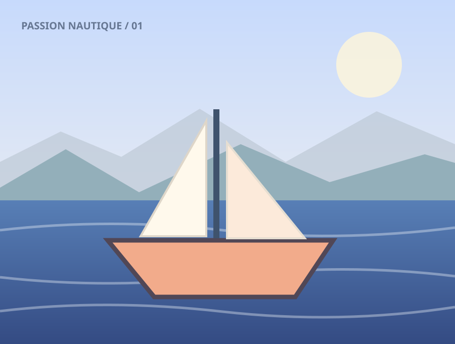

↔
Seamless navigation
Previous / next controls, Home / End, configurable looping, arrow keys and preloading.
Navigation API
JAVASCRIPT
viewer.open(0);
viewer.next();
viewer.previous();
viewer.goTo(4);
viewer.options.loop = false;A fast, intimate way to explore photographs. Fluid transitions, immersive zoom, effortless gestures — no framework required.

Open a photo, zoom, navigate, edit, and explore what happens under the hood.
const viewer = new TinyLightbox('#gallery', {
loop: true,
maxZoom: 5,
wheelZoom: true,
onChange: image => console.log(image.title),
onZoom: ({ scale }) => console.log(scale),
onEdit: async image => openEditor(image)
});
// The root delegates clicks from [data-lightbox].
viewer.open(0); viewer.next(); viewer.resetZoom();
viewer.destroy();Transitions, responsive image sources, custom SVGs and a predictable JavaScript API — no server required.
Drag a photo horizontally with a mouse or a finger; release to navigate. Pull vertically to dismiss. Thresholds and velocity are configurable.
Choose fade, slide, zoom or none independently for opening, changing and closing.
Support srcset, sizes, secure plain-text descriptions and four caption positions, with a per-image zoom option.
const viewer = new TinyLightbox({
images,
effects: { open: 'zoom', change: 'slide', close: 'fade' },
animationDuration: 240,
transitionDuration: 200,
mouseSwipe: true, verticalClose: true,
swipeThreshold: 65, swipeVelocity: 0.6,
verticalCloseThreshold: 110, closeVelocity: 0.8,
elasticity: 0.3
});const viewer = new TinyLightbox({ images: [
{ id: 'boat', src: 'images/lake/lake-1.svg',
srcset: 'images/lake/lake-1.svg 1x',
sizes: '(max-width: 640px) 100vw, 80vw',
alt: 'A sailboat on the lake',
description: 'A beautiful day on the lake',
captionPosition: 'bottom', zoom: true },
{ id: 'portrait', src: 'images/lake/lake-2.svg',
description: 'Zoom disabled for this slide.', zoom: false }
], captions: true, captionPosition: 'bottom' });// An SVG path string or an existing <svg> Element can be passed.
const viewer = new TinyLightbox({
images,
icons: { next: 'M6 12h12m-6-6 6 6-6 6',
previous: 'M18 12H6m6-6-6 6 6 6' }
});viewer.insertSlide({ id: 'new', src: 'images/lake/lake-6.svg' }, 1);
viewer.removeSlide('new');
viewer.once('afterChange', image => console.log(image.title));
viewer.on('beforeChange', ({ from, to }) => console.log(from, to));
viewer.on('afterChange', image => console.log('Loaded', image.id));
viewer.reload(); // Re-read DOM descriptors if a root is present.
viewer.destroy(); // Always removes the dialog and listeners.Each feature works in a standalone viewer, with zero global thumbnail mutations.
Previous / next controls, Home / End, configurable looping, arrow keys and preloading.
viewer.open(0);
viewer.next();
viewer.previous();
viewer.goTo(4);
viewer.options.loop = false;Wheel, double-click, + / −, pinch-to-zoom and drag-to-pan with bounded movement.
viewer.zoomIn();
viewer.zoomOut();
viewer.zoomTo(2.5);
viewer.resetZoom();
console.log(viewer.scale);Open any custom cropper using an async callback. The lightbox closes before the editor opens.
const viewer = new TinyLightbox({
images,
onEdit: async image => {
const newSrc = await myEditor(image.src);
return newSrc ? { src: newSrc } : null;
}
});Native modal focus trap, restored focus, keyboard shortcuts, meaningful labels and reduced motion.
ArrowLeft / ArrowRight navigate
Home / End first / last
+ / - zoom in / out
0 reset zoom
Escape closeReplace the entire list of images or open a viewer without any thumbnail DOM.
const standalone = new TinyLightbox({
images: [{ id: 'a', src: '/a.webp' }]
});
standalone.open('a');
standalone.setImages(nextImages);
standalone.destroy();Multiple instances, event subscriptions, missing-image handling and deterministic teardown.
const stop = viewer.on('load', image => {
console.log(image.id);
});
stop(); // unsubscribe
viewer.close();
viewer.destroy();Both auto-discovery and programmatic modes are supported.
<link rel="stylesheet" href="TinyLightbox.css">
<script src="TinyLightbox.js"></script><div id="images">
<a data-lightbox href="boat.webp">
<img src="boat-thumb.webp" alt="Boat">
</a>
</div>
<script>
const viewer = new TinyLightbox('#images');
</script>See README.md for all configuration options, public methods, event contracts, browser notes, and test instructions.